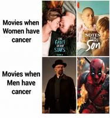
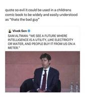

Phoronix reports:
AMD is building out what they are describing as an "elite" team of developers for driving Rust code "deep into the GPU stack" from firmware to drivers, shader compilers, and other GPU software in Rust. AMD Senior Fellow Harsh Meno posted this week to LinkedIn about this new effort...
And note this AMD job posting that's active for hiring a software development engineer to work on Rust code...
"We are building next-generation systems software for AMD GPUs with Rust as a core technical direction. The work spans compilers, runtimes, low-level GPU software, firmware, developer tooling, and methods for improving the safety and correctness of complex hardware-software systems.
"Rust is not incidental to this role. You will help establish how Rust is used in performance-sensitive and high-trust parts of the GPU stack, including the compiler and tooling support, system interfaces, engineering practices, and validation methods required for production deployment. You will have the opportunity to influence both near-term implementations and the longer-term architecture for using Rust across current and future AMD platforms."
"AMD also isn't alone," the article points out, "as NVIDIA has also been pursuing similar Rust-based initiatives for their GPU software too, including the development of the Nova Linux kernel driver written in Rust."
Read more of this story at Slashdot.
"A team at Google's research arm used Google Maps to reroute a small portion of drivers in 10 U.S. cities," reports SFGate — including San Francisco and Los Angeles.
"Through their experiment, which was published in the journal Nature Cities in June, the researchers sought to evenly spread traffic down more corridors as the drivers head to similar destinations, in the hopes of reducing congestion."
The experiments nudged up vehicle speeds by 2% on average on the congested roads, and shortened travel times by a modest 0.7%. Scientists have long thought that traffic could be eased this way, and this now demonstrates how it could actually work in the real world.
The researchers collected data on weekdays in the 10 cities, which included Seattle, Salt Lake City, Chicago and Atlanta. While they studied a variety of types of roads, from city streets to highways, they found that in cities such as Los Angeles where they targeted highways, their diversions had the biggest effect, with driving speeds in those areas increasing by about 4.6%. Most cities, though, saw a smaller improvement with speeds across them increasing by just 0.5% during peak times. The Google study's findings confirm what other researchers have long suspected, said Michael Manville, a professor of urban planning at UCLA who was not involved in the study. "This is a pretty nice empirical illustration of a longstanding idea," he said. If a clogged traffic artery is on the verge of a long delay, he said, rerouting a small number of vehicles away from the bottleneck produces a "not gigantic but noticeable result...."
As with other traffic interventions, there's a risk that Google's approach to spreading traffic could backfire. This concept, known as "induced demand," also applies to efforts like adding a lane to a critical highway, which temporarily relieves congestion, until traffic rises again. "You can do this, but you cannot be too successful, because if you are too successful, then more people will start driving, and essentially you'll be back to ground zero," [said Alexandre Bayen, a co-author of the study and director of UC Berkeley's Center for Information Technology Research in the Interest of Society]. "That's why when we did the study, we only operated at the margin." The idea is to make minor improvements, enough to matter in the aggregate but not so significant that people notice and start driving more, canceling those improvements...
The Google Research study also considered the potential environmental benefits of its traffic improvements. The paper highlights the carbon dioxide emission reductions resulting from the slightly smoother traffic flow and shortened travel times, which add up to a savings of about 1,000 metric tons annually. That's equivalent to the emissions of about 200 vehicles, a drop in the bucket for cities with millions of cars, the majority of which are still gas guzzlers, even in San Francisco and LA. Bayen acknowledges that while emphasizing the cumulative benefit if such efforts were sustained for a longer time. For Manville, the study is a useful proof of concept. "It is a demonstration that if we managed roads better, air would probably be cleaner," he said.
According to the article, "Google's study might not just be a one-off, and city officials could decide to make use of the Google research findings, Bayen said, such as by trying to improve traffic congestion on a larger scale..."
"Google declined SFGATE's requests for comment on whether the company informed city authorities or rerouted drivers about the study," the article points out.
Read more of this story at Slashdot.
The Brave web browser published a new round of benchmarks claiming its desktop browser uses less system resources than Chrome, Microsoft Edge, and Firefox — and also loads pages faster.
The blog Linuxiac reports:
According to Brave's testing, the browser used 44% less CPU, 28% less memory, and 10% less energy on average compared with the three competing browsers. It also completed page loads 20% faster while transferring 26% less inbound data and 39% less outbound data...
- Brave averaged about 33% CPU usage, while Chrome used 47%, Edge 53%, and Firefox 78%.
- For memory, Brave used about 1.2 GB, compared to 1.75 GB for Chrome, 1.62 GB for Edge, and 1.65 GB for Firefox.
By stopping ads, analytics scripts, tracking pixels, and other third-party requests from loading, the browser has less network traffic and less work to do. In page-loading tests, Brave took about 4.4 seconds to fully load a page. Chrome took 5.1 seconds, Firefox 5.3 seconds, and Edge 6 seconds. However, when measuring Largest Contentful Paint, which is when the main content appears, Brave and Chrome both averaged about 2.4 seconds, with Edge and Firefox just behind at 2.5 seconds. This means Brave's main advantage comes after the main content is visible, since there are fewer background ads, trackers, analytics requests, and delayed scripts to process.
Read more of this story at Slashdot.
Switzerland has a population of 9,154,242. And its federal government just launched a pilot program to test open source alternatives to Microsoft 365 on 3,000 workstations, reports the blog It's FOSS. "That's about 7% of the federal workforce."
The target is to complete the migration by end of 2027... On September 3, 2026, the Federal Council published results of "PoC BOSS", a feasibility proof-of-concept involving 172 federal employees who tested the openDesk suite, a German open-source collaboration platform. During the proof-of-concept phase, core office tasks like document processing and email received positive assessments, while large-scale video conferencing still showed technical limitations. Based on the 'success' of the PoC phase with 172 employees, the pilot is now launched for 3,000 employees...
According to Matthias Stürmer, professor at the Bern University of Applied Sciences, Microsoft's supremacy in public institutions poses three problems that are driving this migration. First is the risk of foreign access. US cloud legislation could expose Swiss government data to foreign authorities. Second is the risk to service continuity, as dependency on a single foreign vendor creates operational risk. The third risk is the escalating costs as proprietary licensing fees are rising with no Swiss leverage.
Switzerland's military cybersecurity unit, Cyber Command, is not waiting for the civilian pilot. It is already poised to replace Microsoft 365 entirely with openDesk by October 2026. It is pretty much the same reason. Military doesn't want foreign governments accessing sensitive Swiss data.
The article notes that during the pilot phase, the new system runs in parallel with Microsoft 365 rather than replacing it. But the article's author speculates that "If the pilot is successful, we might expect the migration to continue on all the 54,000 workstations owned by the federal administrations."
Read more of this story at Slashdot.
"Billionaire Bill Ackman's life was upended this February when his 26-year-old daughter collapsed in her Brooklyn apartment, suffering a brain hemorrhage that would render her unable to move, speak or see," writes the Washingon Post. But then...
The hedge fund manager did what any good father would do — at least, any father with vast financial resources and what friends describe as a "Mr. Fix-It" tendency. He sprung into action, getting her topline care at New York City's Mt. Sinai Hospital and consulting a network of well-connected friends all over the world. He helped her access a novel cell therapy that has been gaining traction among longevity enthusiasts, who are seeking ways to prolong human life. And then — motivated by a newfound desire to accelerate scientific research — he vowed to spend more than $400 million to launch an institute dedicated to longevity and brain health... He posted this week that the U.S. Food and Drug Administration, in May, gave his daughter Lucy's medical team a first-time emergency authorization to transplant mitochondria — the energy-producing part of human cells — from her leg muscle to her eyes, in the hopes that the tiny cell powerhouses would facilitate healing in her optic nerves and perhaps even restore her vision.
Ackman's story highlights the increasingly prominent role of the ultra-wealthy in making expensive medical bets on longevity treatments and other novel therapies, altering the direction of research as federal funding for science declines in the second Trump administration. But his saga is a deeply personal one, spurred by his daughter's medical crisis. The focus on longevity by Ackman, who made billions on Wall Street as a hedge fund manager, is aligned with similarly ambitious efforts from some of Silicon Valley's biggest names. OpenAI CEO Sam Altman has backed Retro Biosciences, a start-up whose goal is to add 10 healthy years to the human lifespan through cellular reprogramming. Amazon founder Jeff Bezos is reportedly a funder of Altos Labs, which focuses on cellular rejuvenation and resilience... Billionaire investor Peter Thiel, Google co-founder Sergey Brin and Oracle co-founder Larry Ellison are also deeply invested in life-extension methods and attempts to rewrite the biology of aging...
The therapy given to Ackman's daughter Lucy, known as mitochondrial transplantation, is of great interest not only to people who have suffered injuries, but to longevity-focused scientists who believe that mitochondria may hold promise for reversing some of the effects of aging... In recent years, scientists have discovered that mitochondria have many other functions beyond converting food into energy. They serve as clearinghouses for damaged cells, opening up the possibility that they can help with cell regeneration and healing, said Daria Mochly-Rosen, professor of chemical and systems biology at the Stanford University School of Medicine and co-author of " The Life Machines: How Taking Care of Your Mitochondria Can Transform Your Health."
"I am one of those who believes that focusing on mitochondrial health is a way to address many human diseases, including aging itself," she said. "It's exciting."
Read more of this story at Slashdot.
Reuters reports:
Liquid Network, a Bitcoin-based payments and settlement network, said on Sunday that about $320 million was withdrawn from its federation wallet in a hack.
"Purported white-hat hackers" withdrew around 4,000 of the 4,200 bitcoin held in its Liquid Federation wallet, Liquid Network said in a post on X.
"Liquid wallets will be impacted," their post concluded, adding "and we're sorry for any inconvenience."
Read more of this story at Slashdot.
A new streaming TV channel shows films made with genAI, reports Engadget. "Fairground AI Creator TV" is free — and supported with ads — describing its material as "AI Cinema":
"AI-generated" can make it sound as though someone typed a sentence into a machine and came back five minutes later to find a finished movie. Fairground's catalog shows why that description can be too simple. Take Lost Garden: The Awakening of the Lantern Knight. According to its Fairground page, creator Frank Houbre wrote the world, characters, mythology, emotional arc and screenplay himself. AI tools were used mainly for animation and visual production, with other tools helping create voices and music before the episode was assembled in conventional video-editing software.
There's still one question, the article notes: "whether viewers actually want an AI-focused TV channel." More than 100 AI creators have contributed to the 24-hour slate of programming, although Variety points out several of them were discovered on social media.
The channel was recently profiled in an article by the Guardian. Its headline? "'Nightmare fodder': Roku's AI slop channel is even worse than expected." (And its subheading calls it "a 24/7 channel devoted to low-quality AI content for viewers sick of watching real people move...")
What about people who hate plot and vision and the sight of people speaking convincing dialogue that synchronises perfectly with the movement of their lips? What about the people who just want to watch an unyielding torrent of eerily weightless nightmare fodder? Well, good news. Roku has finally caught up... Early reactions were, to put it mildly, not great. The Verge compared it to eating from a trough, while Futurism called it "bottom-of-the-barrel slop"...
On the plus side, the channel is evidence that artificial intelligence has come on in leaps and bounds over the last couple of years... However, it is still awful. Categorically, catastrophically awful. The channel doesn't so much offer shows as a drifting dreamscape of bad ideas rendered as horribly as possible with no thought paid to scheduling. At one point on Wednesday, a shrill high-frequency anime gave way to a long and staid German-language short about Nazi bureaucracy. After that came a sort of Gladiator ripoff that had all the dynamism of an exhibit you'd see at the fourth-best museum on a poorly planned family holiday.
Read more of this story at Slashdot.
Slashdot reader DeanonymizedCoward writes: Reuters reports that the US Military is disabling ad tracking on devices, to prevent adversaries from buying publicly-available tracking data to assist in targeting troops. Military officials say that they have disabled trackers on a variety of computers and mobile devices, according to letters released on Friday by Sen. Ron Wyden, and following reports that commercially-available tracking data has been used to target troops in the Middle East....
Wyden said in a statement that it was clear that the military's efforts "have not been effective at neutralizing this threat." U.S. Representative Pat Harrigan, a North Carolina Republican, said that U.S. enemies "should not be able to pull out a credit card and buy information that helps them track American troops." Rep. Harrigan remains silent as to the larger question of whether the general public should be able to pull out a credit card and buy information that helps them track anyone they please.
"The Pentagon said in an email it would respond to the lawmakers directly," Reuters reports:
The Army said in a statement that advertising IDs had been blocked on Windows computers "since before 2021" but that Android and Apple mobile devices had only had it disabled by default "since at least February 2026...." The effort to reduce the location data generated by smartphones comes as military officials weigh increasingly strict restrictions on phone use overall. In July, Reuters reported that some deployed personnel in the Middle East could be ordered to surrender their phones amid concerns that mobile videos they were posting to the internet were helping Iran target American bases in the region.
Read more of this story at Slashdot.
A new study published Friday in AGU Advances "depicts the most advanced picture yet of how a rare but massive solar storm could affect some US industries and electric systems more than others," reports CNN.
"During a 250-year solar storm, the East Coast would have widespread potential for grid failure."
Researchers modeled what a Carrington Event — a 1-in-150-year geomagnetic storm or even rarer — could mean for the modern day. They estimate the US economy would lose about $1.5 billion to $2 billion per day from direct and indirect costs, as millions of people face power outages. The findings show the most vulnerable areas are the Northeast and the Northern Plains, especially locations at higher latitudes.
No one knows when the next big storm will hit. While the most severe geomagnetic storms are labeled as once-in-a-century or rarer, these events don't follow a fixed schedule. "That timing only averages out on very long timescales," said Anna Kelbert, a geophysicist at the Harvard-Smithsonian Center for Astrophysics, who was not involved in the study but previously studied solar storm effects on power grids. "The event can occur at any time, as soon as a week from now, or centuries later...." [Shawn Dahl, service coordinator at the Space Weather Prediction Center operated by the National Oceanic and Atmospheric Administration in Boulder, Colorado], said the sun is now coming down from a period of heightened activity, which is also when some of the biggest storms to hit Earth have occurred in the past. "We still need a lot of work to be ready...."
"We haven't really seen events like this size in the modern era, where we've had all of this high technology and we've had the power grid of this size," said Ed Oughton, researcher at George Mason University and lead author of the new study... Because the US grid's actual structure is proprietary for security reasons, the team used engineering models to create various network and transformer setups including the 10,464 substations and 16,256 transmission lines found across the country... The grid structure also contributes to higher risk in some areas. For instance, the eastern US is linked together in a single grid interconnection. A voltage issue in Maine, if not isolated early, could cascade through the grid to Washington, DC. The West works similarly, whereas the Texas interconnection operates mostly within the state...
Power is restored over time depending on any alternative electrical paths that could bypass the substation or availabilities of spare transformers, for instance. "This nationwide analysis shows that we are currently ill-prepared to face a major magnetic storm, and that the societal impacts would be catastrophic," Kelbert said.
"The study estimates power disruptions for 5.1 million people and 135,000 businesses," according to the article, and "The outages could last from hours to days to weeks depending on the damage and resources available to get back online, said Oughton."
Read more of this story at Slashdot.
TiVo is notifying customers about changes to "one of its longest-standing and most popular DVR features," reports the blog Cord Cutter News:
Starting November 2, 2026, the current version of SkipMode that allows users to jump over commercial breaks with a single button press on the remote will no longer be available. The company is instead preparing to test a new paid add-on called Premium Auto Commercial Skip.
SkipMode has been a core part of the TiVo experience for years. After a supported show finished recording, the service added markers that let viewers leap from the end of one program segment directly to the start of the next, bypassing the ads in between. On newer TiVo Experience 4 devices, users could even set the feature to automatic so commercials were skipped without any remote interaction. The feature was limited to popular prime-time programming on major networks, typically appearing a short time after a show aired.
Under the new plan, that one-button and automatic functionality will disappear from the standard service. Viewers will still be able to skip commercials the traditional way by using the 30-second skip button or the fast-forward control on their remotes. Those manual methods have existed on TiVo boxes for more than two decades and do not rely on the company's commercial-detection data.
In November, TiVo will offer a 30-day free trial of the new Premium Auto Commercial Skip service. After the trial ends, customers who want to keep the automatic or one-button skip capability will need to add it to their accounts for an extra monthly fee.
The company has not yet published the price.
Thanks to long-time Slashdot reader AmiMoJo for sharing the article.
Read more of this story at Slashdot.
Thursday 404 Media reported that Flock taught America's cops "how they could surveil the No Kings protests" against President Trump (as well as "small parades") in a webinar last year that described "using a mix of Flock's technology and law enforcement's own databases."
In the webinar, Flock's director of market management Caity Peak explains how real time crime centers — which are police surveillance centers that utilize Flock cameras and other surveillance cameras — can be used for emergency response, but can also be used to surveil "established events" like 4th of July fireworks displays, parades, bike races, Mardi Gras, and protests. The webinar shows just how routine the idea of always-on surveillance has become, and how casually it is used during extremely innocuous events. Peak explains that police can use FlockOS, a software platform that combines Flock's automatic license plate readers (ALPR), drones, gunshot detectors, 911 data, and other surveillance cameras (including ones Flock does not own) into a "single pane of glass" or single piece of software to look at various types of surveillance in one place during both emergencies and relatively mundane events in a city or town.
"Imagine that you're an incident commander, and you're working this No Kings Protest," Peak explains while a dashboard shows a series of surveillance tools overlaying the city of Denver. "If I'm somebody assigned a traffic post that's working this No Kings Protest, I really don't have time to go in [...] and look at all these places [for different intelligence]. This is an example of viewing all of that in one place...." The dashboard Peak shows includes traffic information, a "response plan" for the protest, the floor plans of nearby buildings, as well as a series of video feeds of both outdoor-mounted cameras and cameras inside businesses and government buildings.
404 Media and the Electronic Frontier Foundation previously showed that police have specifically used Flock cameras to monitor the No Kings protests and other First Amendment-protected activity... This webinar shows this type of surveillance is not anomalous, and is specifically taught by Flock. The webinar also shows that Flock's latest public stance — that its ALPR cameras are noninvasive technology, that they take only static images at a single place and time, and that they are primarily used to solve the worst crimes — is wildly misleading. Flock has time and time again pitched itself to police as a sort of operating system to solve crime and do real-time surveillance and predictive policing. ALPRs are just one part of this broader surveillance apparatus that Flock has created, markets to police, and teaches them how to use.
Read more of this story at Slashdot.
It looks like a spaceship hovering over South Los Angeles, writes CNN, with futuristic tube-like elevators and an exhibition of Banksy murals. There's a room featuring Luke Skywalker's X-34 Landspeeder, but in its gardens there's a 19th-century cast of a sculpture showing David conquering Goliath — and then a bronze statue of Princess Leia strangling Jabba the Hutt with a chain. Next to Rosie the Riveter. CNN argues it's the museum's message that "all forms of art and mythology on display here — from comic book illustrations and 'Star Wars' concept art to Impressionist masterpieces and reproductions of the Sistine Chapel — are worthy of equal consideration within the long arc of human history."
More than 16 years after first proposing a cultural institution dedicated to visual storytelling, filmmaker George Lucas and his wife, businesswoman Mellody Hobson, will open their long-awaited museum in Los Angeles on September 22. The project made two false starts — plans to construct it in San Francisco and Chicago were both eventually abandoned — and has cost Lucas around $1 billion of his own money to build... Inside, visitors will find a significant slice of Lucas' private collection, amassed over five decades and spanning art, costumes, movie props and memorabilia, with more than 1,300 objects currently displayed across 30 galleries...
Many fans will come for the "Star Wars" vehicles and sculptures of Yoda and Grogu, but the sci-fi mega-franchise only occupies about 7% of the museum. Lucas and Hobson are betting those visitors will stay for artworks by Frida Kahlo and Norman Rockwell, photographs by Gordon Parks, comics by Frank Miller and Cowboy Bebop anime, which will be screened in one of two theaters alongside early silent movies, Lucas' own student films and productions by famed historical artists like Man Ray...
[M]ajor art institutions like New York's Museum of Modern Art and London's Tate Britain have reconsidered the cultural canon by rehanging their permanent collections, exhibiting overlooked or marginalized artists alongside more widely celebrated names. The Lucas Museum appears to follow a similar philosophy, contending that the gravitas of an artwork is not just determined by its display in space but by what it's in dialogue with. Lucas has even called his namesake museum "a temple to the peoples' art," elevating the work of illustrators and other underappreciated art forms...
The museum defines narrative art as any art that tells a story, and, moving through the space, one feels the enormity of the task of organizing and presenting such a broad vision... The open-plan, curvilinear design means the galleries are not fully divided, reinforcing the all-encompassing nature of the collection, though altogether the vast array of exhibits sometimes struggle for cohesiveness. Disjointed curation may reflect turbulence in the museum's management ahead of the opening. Last April, former director and CEO Sandra Jackson-Dumont departed, with Lucas himself assuming responsibility for "content direction." A month later, the museum laid off 15 full-time and seven part-time staff before chief curator Pilar Tompkins Rivas resigned in December, with no replacement planned...
After failing to secure a site in San Francisco, Lucas faced public opposition and a lawsuit in Chicago, with nonprofit Friends of the Parks arguing that his lakefront proposal would essentially privatize public land. Amid the delays and setbacks, simply opening the museum may feel like a victory to its founders.
Lucas's wife said she'd watched the awe-inspiring activity of genius at work, reports Variety. "And he was fanatical at times, but the thing about a fanatical person is they're a fan. He was a deep fan of these illustrators in this work, and he wanted them to be represented, and I became a deeper fan of his."
Hobson teared up as she continued, "I was a fan already, but I saw something, the inspiration, the unwillingness to compromise, the determination, the lack of sleep, the lack of rest, the doggedness that actually taught me so much more than I ever could have imagined." The museum, which features 1,200 pieces from Lucas's private collection, has been in the works for about 20 years... "I thought I was tough. I thought I was strong, I thought I had a will, and then I saw George, and I was like, 'Oh, that's why you could only do six of those movies,'" Hobson said. "Any more would have killed you."
Artforum magazine notes the museum received "mixed reviews" before its September 22 opening:
The billion-dollar, 300,000-square-foot museum, which opens to the public on September 22, encompasses 100,000 square feet of gallery space housing the collection of Lucas and Hobson. Intended to highlight storytelling in art, it presents the work of comic book artists John Romita Sr. and R. Crumb, illustrators Maxfield Parrish and Norman Rockwell, and fantasy painters Boris Vallejo and Frank Frazetta alongside masterworks by Artemisia Gentileschi, Lucas Cranach the Elder, and Pieter Brueghel the Younger, as well as Mary Cassatt, Frida Kahlo, and John Singer Sargent. All the works on display were chosen for their ability to tell a story, frequently in a single frame, Hobson told members of the press on September 2...
"Some visitors may be scandalized by the collision of so-called 'high' and 'low,'" wrote Min Chen in Artnet News. "But there's something liberating about watching those hierarchies collapse, seeing the breadth of human creativity arrayed beyond the bounds of genre or canon." Notably, most of the works appear without didactics, which is intentional. "We're encouraging people to have their own individual encounters with works of art and take away what they feel like speaks to them," Lucas told The Guardian.
The tactic did not land for everyone. "Without [didactics], I left the Lucas without a clear sense of how the museum is positioning itself or, frankly, without learning much about anything beyond what I already knew...." wrote Maximiliano Durón in Artnews. "The Museum of Narrative Art lacks any kind of narrative." Mary McNamara of the Los Angeles Times was unfazed by the lack of information, calling the institution "gutsy" and "defiant."
"Critics will roar," wrote McNamara, "but the Lucas Museum is a win for 'the people's art.'"
Even the museum's web site is a visual extravaganza (and impossible to scroll). Reportedly there's two restaurants, including the rooftop Skywalker Grill, which offers offering everything from striped bass and ragu bolognese to lobster corn dogs and Skywalker ranch Waygu burgers.
Read more of this story at Slashdot.
Last year the writing program at the University of Baltimore used an app that tracks students while they're writing in Google Docs, offering teachers a video playing back revisions "with a scoreboard of all the edits, pastes and minutes spent on it," writes the Washington Post. "Is it surveillance? Yes, I think obviously," says the program's director.
But was there a better way?
She is one of a dozen educators around the country who told The Post that they're experimenting with a different approach to student use of generative artificial intelligence this school year. Teachers and professors are throwing out old assignments, installing new policies and protocols, and incorporating AI built for the classroom, rather than feeling forced to choose between returning to pencil and paper or acting like the AI police.
Her new lesson plan even incorporates generative AI in a controlled way to let her evaluate students' critical thinking skills. She created chatbots using BoodleBox, the university's AI vendor, that allow instructors to see both sides of the conversation. For an assignment testing students' ability to make evidence-based arguments, they participate in a simulated school board meeting about banning books. It involves debating chatbots designed by Zeleny with names like the Confrontational Parent. Writing students usually turn in business proposals and research papers. This semester, instructors are starting to ask instead for transcripts of conversations a student had with a chatbot, a handwritten outline of their composition, and a video reflection of how they felt about the work. "In a lot of ways, we have made these assignments harder, but writing should have always had more detailed checkpoints along the way," she said.
Read more of this story at Slashdot.
The EV blog Electrek reports:
A Clinton Township, Michigan man was charged $418 for a single EV charging session at Elder Hyundai's Macomb Township store after finding the charger listed as publicly available on the EVgo app, but didn't discover the charges until after wrapping up his 40-ish minute charging session. "I was flabbergasted," explained Stanley Kpenkann, who had been driving a rented Chevy Bolt EV at the time. "Never in my wildest dreams did I think I would be saddled with a bill of $418 for a charging session."
After calling EVgo to report the error, he found that the exorbitant charge wasn't a mistake at all - Elder Hyundai was charging customers an eye-gouging $5 per kWh, plus another $5 for every minute connected.
A local news report notes that "After back-and-forth with EVgo, the company processed what it called a goodwill refund of $405." (And the dealership argued their charger was reserved for its own customers and vehicles, so they set prices high to deter outside use.)
But Electrek argues the story "speaks to much larger problems among the EV charging business in particular and car dealerships in general..."
[In June] Plug & Play EV's Steve Birkett took to LinkedIn to call out his local Hyundai dealer in Union, NJ for charging a ridiculous $15 per kWh to top off his IONIQ 5 (!)... Even worse, he noted that a number of area dealerships that had listed their ports as "public" were actively discouraging public use with signs and stickers designed to turn people away...
[U]nlike gas stations, EV charge point operators in many states aren't required to clearly advertise what they'll charge before a driver plugs in in the same way that gas stations are: with clearly legible signage that's visible from the street.
Read more of this story at Slashdot.
A new article about AI in The Economist argues that "Initial effects of the technology on employment look positive."
Perhaps AI will eventually make many humans unemployable — but there is no sign of it yet. On September 4th the Bureau of Labour Statistics reported that the American economy added 162,000 jobs in August, far above expectations. The unemployment rate is just 4.1%, lower than in almost 90% of months over the past half-century. Young workers, often cast as AI's first victims, are holding up remarkably well: the gap between unemployment among 20-24-year-olds and the overall rate is close to a multi-decade low.
Some companies and workers are being severely disrupted by AI. Hiring in professional and business services is running about 10% below the average in 2015-19. Tech giants like Microsoft and Meta are trimming headcounts as they reorganise their businesses around the technology. Smaller firms such as Block, the owner of Square and Cash App, and Intuit, the maker of TurboTax and QuickBooks, are replacing people with bots. American companies have announced some 16,000 AI-related job cuts a month on average so far this year, according to Challenger, Gray & Christmas, an employment consultancy.
But AI-related lay-offs gets lost in the churning jobs market where employers shed roughly 1.7m workers in a typical month. And the evidence so far is that AI is already creating a lot of jobs to replace those it has destroyed. The vast sums pouring into data centres and power generation have set off a race for construction and infrastructure workers. AI startups are hiring like there is no tomorrow. Incumbents racing to keep up are creating new AI roles. And by making some workers more productive, AI may be increasing demand for their services.
Add it all up, and The Economist estimates that AI has so far created around 1m new jobs in America. That easily exceeds the roughly 200,000 lay-offs attributed to AI since mid-2023, and appears more than enough to offset weaker hiring in many back-office roles.
Their article acknowledges that since January 2023 employment has fallen roughly 10% for customer-service workers and 15% for administrative assistants. But when The Economist looked at professions "closest to the AI boom" — engineers, software developers, mathematicians and data scientists — they found that since 2022 they've added roughly 730,000 jobs above trend. They see AI as creating new white-collar jobs for everyone from model and deployment engineers to new data annotators.
The chief economist at the Burning Glass Institute agrees, estimating that roughly 1% of professional jobs are now "AI jobs" — about 1 million positions in the U.S. — while in computer occupations and life sciences it's between 4% and 5%. (Data-center construction spending also increased 60% in one year, according to Census Bureau data, creating jobs for electricians, HVAC specialists, grid engineers, and machine technicians.) And "Indeed finds that installation and maintenance jobs at data centres advertise wages about 40% higher than comparable work elsewhere."
Read more of this story at Slashdot.
Wall Street Journal : Robinhood adds Crypto.com's yes-or-no contracts to its platform and takes minority stakes in the exchange and its prediction market business OG — The brokerage will add yes-or-no contracts from Crypto.com prediction business and take stake in digital-currency exchange
Mark Gurman / Bloomberg : A look at Apple's path to a foldable device, the biggest change in iPhone history; sources: memory shortages led Apple to blow past an early $1,999 price goal — Around 2020, Apple Inc. Chief Executive Officer Tim Cook returned from a trip to Asia unusually energized about a new product category: foldable phones.
Siobhan Roberts / New York Times : Fields medalist Jacob Tsimerman, set to join OpenAI later this month, launches the Mathematical AI Safety Institute to apply higher math to AI safety problems — Jacob Tsimerman, a recent recipient of the Fields Medal, believes that higher mathematics can help curb the dangers of runaway artificial intelligence.
Clare Armstrong / ABC : Australia proposes a “My Feed, My Way” initiative requiring social platforms to send users a notification asking them to opt in or out of algorithmic content — In short: — The federal government's proposed digital duty of care could let Australians opt in or out of algorithmically recommended social media content.
Micah Barkley / Bloomberg : Forus, which uses AI to help patients get prescribed drugs more quickly by navigating steps like insurance coverage, raised a $150M Series C at a $3B valuation — Healthcare automation startup Forus has raised $150 million at a $3 billion valuation just months after completing a previous funding round.
Foo Yun Chee / Reuters : Google rolls out changes to search results in the EU to comply with the DMA, saying they mark the largest reduction in quality of service in Search's history — Alphabet's (GOOGL.O) Google on Tuesday rolled out changes to its online search results in Europe to satisfy EU antitrust regulators …
Ryan Lawler / Axios : NYC-based Blee, which makes marketing compliance software for financial services companies, raised a $20M Series A led by Fin Capital and SMBC and a $7M seed — Blee, a marketing compliance software startup, raised $27 million in seed and Series A financing, founder and CEO Guy Shahar tells Axios exclusively.
Howard Liu / South China Morning Post : China says its AI compute capacity rose 177% YoY to 2,185 eflops by the end of June, and is targeting 9,800 eflops by 2030 via ~$532B in IT infrastructure spend — China plans to deploy artificial intelligence computing clusters containing 100,000 accelerator cards and sharply expand …
Dustin Volz / New York Times : Researchers say they used AI to build a zero-click worm that can hack WeChat accounts and spread across iOS and Android; Tencent says it fixed the vulnerability — The attack, discovered by A.I. researchers, could have compromised hundreds of millions of devices within hours, experts said.
Bloomberg : Samsung and TSMC commit to using ASML's High NA EUV machines by 2028 and 2030, joining Intel, with all four agreeing to shift from 6-inch to 12-inch photomasks — ASML Holding NV has won commitments from top chipmakers to use its latest semiconductor production gear, while embarking …
Minxiao Chang / South China Morning Post : DeepSeek says it is seeking ~150 senior engineers in an “unprecedented” hiring spree to overhaul its backend systems, strained by high user demand and AI agents — The company cited a rapid surge in user demand for AI and increased complexity of its computing systems
Leila Miller / Reuters : Argentina's Patagonia region is drawing interest from hyperscalers and data center developers due to its cold climate, expanses of land, and renewable energy — Argentina's rugged Patagonia is drawing increasing interest from investors searching for sites for mega data centers who are enticed …
Adam Satariano / New York Times : Mistral raised a €3B Series D led by Samsung at a ~€21B valuation, up from €11.7B in September 2025, as it expands from developing AI models into data centers — Mistral is trying to keep pace with American and Chinese rivals while offering customers a European alternative for artificial intelligence.
Jake Roach / Tom's Hardware : Arm debuts Neoverse CSS N4, its next-gen semi-custom chip design platform, and says it supports 8 to 128 Neoverse N4 cores at up to 3.8 GHz on TSMC's N3P node — Putting a little pep in Neoverse N-series' step. … Arm is bringing its next-gen Neoverse CSS N4 platforms to the cloud …
Financial Times : Sources: Huawei is investing in Chinese lithography companies and helping them secure deals with leading fabs like SMIC to reduce reliance on foreign suppliers — Tech giant plays ‘project management’ role to build components needed for DUV machines and avoid export controls